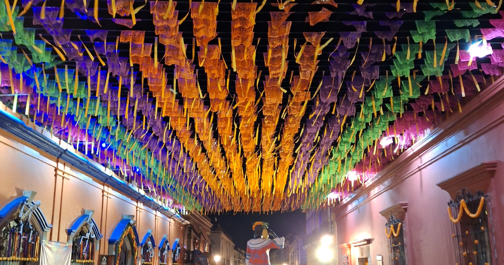

Lo que quiero
que vivamos juntas
Un viaje diseñado desde una mirada feminista y sáfica
Un viaje para mujeres LBTQ+ donde puedas conocer México acompañada y siendo realmente tú misma. Sin tener que preguntarte si vas a encajar, si podrás hablar de tu vida y tus relaciones con naturalidad o si tendrás que medir cómo expresarte dentro del grupo. Queremos que puedas viajar, conocer gente y disfrutar del viaje sabiendo que estás en un espacio donde encajar no va a ser una preocupación.
Una comunidad viajera, bibollera y con espíritu crítico
Me encantaría que Tukki Legui fuera mucho más que un viaje. Ojalá entre todas construyamos una comunidad de mujeres con ganas de viajar, cuestionarse cosas, compartir experiencias y seguir organizando aventuras juntas cuando volvamos a casa.
México es inmenso. No hace falta verlo todo en este viaje.
La ruta se concentra en Ciudad de México, Cholula y Puebla, Oaxaca y Puerto Escondido para poder disfrutar cada lugar con calma, sin convertir el viaje en una carrera de destinos.
México a través de personas locales y experiencias
Lucha libre, surf, mezcal, gastronomía, naturaleza y cultura, junto a experiencias compartidas con personas que viven allí y que nos permitirán conocer México desde una perspectiva más cercana. Conoceremos sus lugares favoritos, sus historias y sus recomendaciones, pero también tendremos mucho espacio para explorar por nuestra cuenta, improvisar y disfrutar del viaje juntas. Un viaje para vivir México, no solo visitarlo.
Viajar también es cuestionarnos
Durante el viaje intentaremos hacernos preguntas sobre la forma en la que viajamos y acercarnos a otras realidades con curiosidad y respeto. Trataremos de dejar a un lado esa mirada etnocéntrica con la que muchas hemos crecido y priorizaremos iniciativas locales y comunitarias que permitan conocer el destino desde otro lugar.